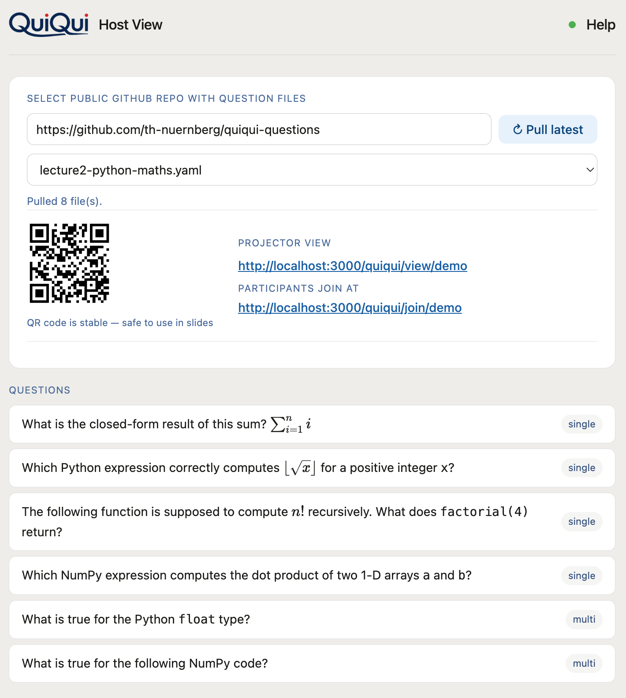
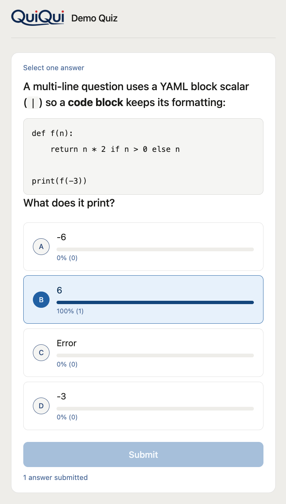
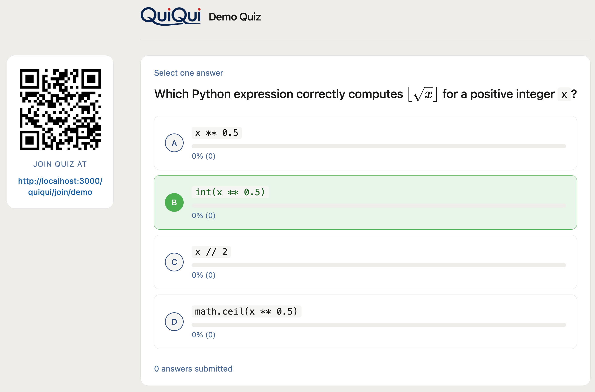

Pose a question, participants answer on their phones, the room sees live results — no login, no app install.
Quickstart for Lecturers →Are you a lecturer who wants to use this hosted instance?
Ask for the URL to start your own session.
Screenshots



Features
No participant loginScan a QR code or visit a URL — that's it.
Live resultsBar chart updates in real time as answers come in.
Questions live on your sidePlain YAML — a single file from your computer, or a GitHub repo you pull from.
Markdown, LaTeX & imagesCode blocks, inline code, math expressions, and images in questions and answers.
No databaseAll session state is in memory — nothing persists.
Open sourceAGPL-3.0 — free to use, self-host, and modify.